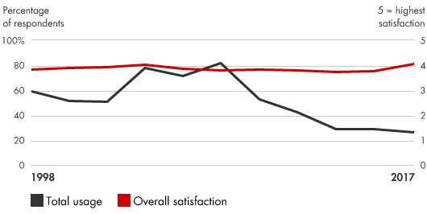
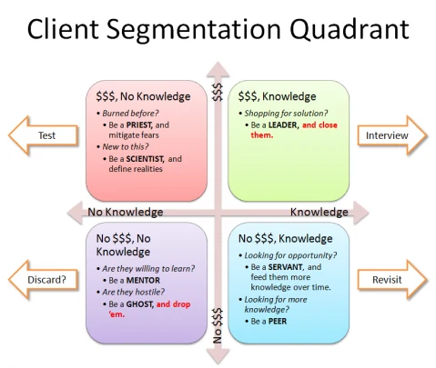

📘معرفی ابزار
دستهبندی مشتریان به معنی تقسیمبندی یک بازار به گروههای جداگانهای است که مشتریان هر گروه ویژگیهای مشابهی داشته باشند. این دستهبندی میتواند ابزار قدرتمندی برای شناسایی نیازهای برآورده نشده مشتریان باشد. شرکتهایی که بتوانند کمبودها را شناسایی کنند، میتوانند با توسعه محصولات و خدمات جذاب و منحصر به فرد عملکرد خود را بهبود دهند و مزیت رقابتی ایجاد کنند. بنابراین دستهبندی مشتریان زمانی موثر است که شرکت به بخشهایی بپردازد که سود بیشتری داشته باشد و مزایای رقابتی مشخصی در اختیار آنها قرار دهد. این اولویتبندی میتواند به شرکتها در توسعه فعالیتهای بازاریابی و استراتژیهای قیمتگذاری برای استخراج حداکثر ارزش از مشتریان کمک کند. یک شرکت میتواند از دستهبندی مشتریان به عنوان مبنای اصلی تخصیص منابع به برنامههای توسعه محصول، بازاریابی، خدمات و برنامههای تحویل استفاده کند.
🆕بهروزرسانی ۱۴۰۵
این بخش در نسخهٔ آنلاین ۱۴۰۵ افزوده شده است. متن اصلی کتاب (آبان ۱۳۹۹) در بخشهای بعد بدون تغییر آمده است.
آمار و شواهد تازه
- گزارششده از McKinsey (۲۰۲۱): ۷۱٪ مصرفکنندگان انتظار تعامل شخصیسازیشده دارند و ۷۶٪ در نبود آن ناراضی میشوند. توجه: این آمار منتشرشده بدون جزئیات روش نمونهگیری است و بهصورت شاخص جهتدهنده خوانده شود. (منبع: MediaPost)
چه چیزی تغییر کرده؟
بخشبندی ایستا (چند گروه ثابت) در حال جایگزینی با بخشبندی پویا و پیشبینیمحور است که با دادههای رفتاری روزبهروز بهروز میشود. در عین حال، حریم خصوصی و مقررات داده، دامنهٔ مجاز استفاده از دادههای فردی را محدود میکند.
نمونه ابزارها و نرمافزارهای امروزی
نامها صرفاً نمونهاند و توصیه یا تبلیغ تجاری نیستند؛ شرایط دسترسی و تحریمها را برای سازمان خود بررسی کنید.
منابع این بخش
🧩فرآیند اجرا
- تقسیم بندی بازار به بخشهای معنی دار و قابل اندازه گیری، با توجه به نیاز مشتری، رفتارهای گذشته و پروفایل
- تعیین پتانسیل سوددهی با تجزیه و تحلیل اثرات درآمد و هزینه خدمات هر بخش
- شناسایی بخشهای هدف، با توجه به پتانسیل سود و توانایی شرکت در ارائه خدمات به آنها
- سرمایه گذاری برای تهیه محصولات، خدمات، بازاریابی و برنامههای توزیع، متناسب با نیازهای هر دسته
- اندازه گیری عملکرد هر دسته و تنظیم رویکردهای دسته بندی در طی گذشت زمان متناسب با شرایط بازار
💼موارد استفاده در کسبوکار
- اولویت بندی برنامههای توسعه محصول جدید
- توسعه برنامههای بازاریابی سفارشی
- انتخاب ویژگیهای خاص محصول
- تعیین گزینههای مناسب برای خدمات
- طراحی استراتژی توزیع بهینه
- تعیین قیمت مناسب محصول
📈میزان محبوبیت در طی زمان

🧪نمونه ابزار / الگو

این ابزار راهکاری برای دسته بندی مشتریان بر اساس میزان شناخت و پتانسیل سودآوری ارایه میکند و کمک میکند که متناسب با هر گروه مشتری، راهبرد متناسب اتخاذ گردد. به این ترتیب امکان مدیریت بهتر منابع در سازمان در راستای بازاریابی، افزایش فروش، بهینهسازی توزیع، توسعه ویژگیهای جدید و سفارشیسازی ویژگیها فراهم میشود.
⬇️چکلیست قابلدانلود
چکلیست اجرایی این ابزار را دانلود و در سازمان خود تکمیل کنید. گامها از فرآیند اجرای همین صفحه برداشته شدهاند و ستونهای مسئول، موعد و وضعیت برای پیگیری تیمی خالی گذاشته شده است.
⬇ دانلود چکلیست (Word) · دستهبندی مشتریان📚مراجع مطالعه بیشتر
- Bain & Company, Customer Segmentation: https://www.bain.com/insights/management-tools-customer-segmentation
- Thinkaroundcorners, How to focus on the right customer: Segmentation, thinkaroundcorners.com/2010/03/how-to-focus-on-the-right-customer-segmentation/
- Almquist, Eric, John Senior, and Nicolas Bloch. “The Elements of Value.” Harvard Business Review, September 2016, pp. 46–53.
- Christensen, Clayton M., Scott D. Anthony, Gerald Berstell, and Denise Nitterhouse. “Finding the Right Job for Your Product.” MIT Sloan Management Review, Spring 2007, pp. 38–47.
- Cohen, Steve, and Paul Markowitz. “Renewing Market Segmentation: Some New Tools to Correct Old Problems.” ESOMAR 2002 Congress Proceedings. ESOMAR, pp. 595–612.
- Kotler, Philip. Marketing Management: Analysis, Planning, Implementation and Control. Prentice Hall, 1999.
- Levitt, Theodore. The Marketing Imagination. Free Press, 1986.